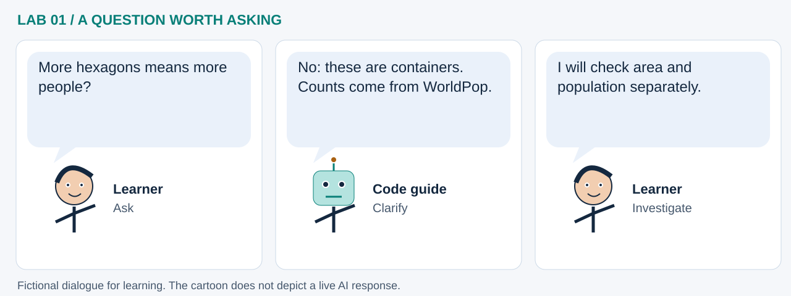

LAB 01 · 32-SECOND VISUAL WALKTHROUGH
The hexagon is a container
How does changing spatial scale change what we can compare?
Silent, captioned storyboard. Use the player to pause, seek or change playback speed. On a small screen, use fullscreen or read the transcript below. The diagrams explain the method; they are not recordings of a live model run.
Download MP4 · Captions · Open infographic at full size

What runs here?
H3 geometry and area calculations run in Pyodide. The population PMTiles layer is streamed by the map viewer.
Spatial indexing foundation: H3 assigns cells; it does not estimate their populations.
Transcript and code landmarks
- 00–08s · Locate
Assign one location to a resolution-7 H3 cell.
latlng_to_cell(lat, lon, 7) - 08–16s · Outline
Convert the cell boundary to longitude-first GeoJSON.
cell_to_boundary(cell) - 16–24s · Compare
Finer resolution covers a smaller area; geometry is independent of population.
h3.cell_area(...) - 24–32s · Join later
Use population attributes as a separate source before calculating exposure or density.
m.add_pmtiles(...)
The common misconception

Read the cartoon dialogue
- More hexagons means more people?
- No: these are containers. Counts come from WorldPop.
- I will check area and population separately.
Try explaining it
If the same population is redistributed across finer cells, must the total grow?
Check your reasoning
No. Spatial resolution changes the allocation units; a correctly conserved sum can stay the same.
Original educational illustrations and captions authored for this repository. See the notebook for data and software citations.